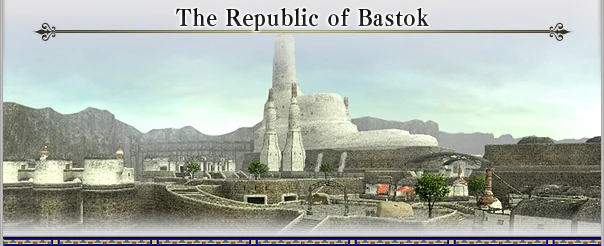
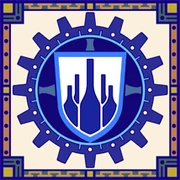
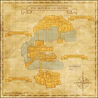

Level 75 reference · Zenith rules






In the southern reaches of Quon lies the Republic of Bastok, a nation founded by the technologically gifted Humes. The president, elected from among the Hume population every few years, takes an active role in leading the government.
Bastok was originally built on the wealth gained from the mining of mythril, a precious metal. But with recent developments in metal refining and processing techniques, Bastok has become famous as a craftsman's town. The southern area of the city is home to many Galka, a race of hulking humanoids. They have made valuable contributions to the expansion of the mines, but despite this, there is a deep-seated tension between the Galka and the Humes.
Surrounding the city of Bastok is the inhospitable Gustaberg region, an unforgiving land of sparse vegetation.
Culture
Beyond the refinement of iron, the craftsmen of Bastok have made numerous breakthroughs with new kinds of metal, such as mythril, darksteel, and cermet. The research of Cid, a genius engineer, has led to the development of engines that utilize crystal energy and allow rapid advances in technology.
The rich, spiritual culture of the Galka is rapidly being assimilated by the materialistic Hume lifestyle. To say that Bastok's culture has become predominantly Hume would not be far off the mark.
Living Standards
In recent years, the remarkable nation of Bastok has had the largest population explosion of any country (most notably in the Hume population), but due to limited space for residential buildings, the average citizen's home is small and uncomfortable. Also, most of the profit made from ore export is consumed by the need to import large quantities of food. For most inhabitants of Bastok, daily life can be a struggle--and food shortages are becoming a serious problem.
Climate
With practically no rainfall during the course of the year and all of the ground water concentrated under the city of Bastok, the surrounding environs are a barren, desolate landscape. Besides popotoes, very little can be grown; the Republic of Bastok must rely heavily on imported foodstuffs. However, a ready supply of copper, iron, silver, gold, and mythril ore provides a bountiful source of wealth for the industrial town.
Military Organization
The Republican Army is an organized militia where the president serves as high commander. The army is formed by citizens and adventurers who join as part of a voluntary conscription system. Even the legions that make up the core of the army are generally not career soldiers.
The Republican Legions
A military organization led by the Strategic Command of the Department of Defense. The legions, of which there are four (including a naval legion), are the main fighting forces of the Republican army. The smallest unit of the legions is called a contubernium, and consists of ten foot soldiers led by a Decurion. Ten contuberniums form one centuria (led by a Centurion), and a cohors (led by a Praefectus) is formed by nine Centuria plus a unit of engineers. A single legion (led by a Legatus) is formed with seven cohors plus three thousand extra soldiers, including heavy infantry, cannoneers or cavaliers, and supply troops. In all, the Republican Legions have close to forty thousand soldiers, a military force that surpasses that of any other nation. This number is only a basic calculation, however. In times of peace, one infantry legion and one naval legion are on active duty, while all other soldiers of less than Decurion rank are held in reserve. Also, there are various ways to avoid military service, which cut the actual number of soldiers on active duty down to less than two-thirds of the usual legion strength. It is possible to have someone take your place for active duty, and there are many cases of Humes offering to pay the often poverty-stricken Galka to stand in for them. In effect, these Galka become career soldiers, and the overall strength of the legions is ultimately increased.
The Iron Musketeers
The Iron Musketeers are a permanent unit commanded by the Trade Defense Section of the Department of Industry. This unit was originally formed by the Department of Industry to secure trade routes in and out of Bastok, but is currently deployed on a regular basis to deal with the Quadav. A single company, led by a Musketeer Commander, consists of ten Senior Musketeers and thirty Junior Musketeers. There are presently around one hundred companies in existence, and their members are drawn from the best soldiers of the Republican Legions. Provided with the latest equipment and possessing extensive battle experience with the beastmen, the Iron Musketeers are an elite fighting force.
The Gold Musketeers
The Gold Musketeers are a permanent investigation unit commanded by the Surveyor Section of the Department of Mining. Charged primarily with discovering promising seams of ore, the Gold Musketeers are called upon to scout foreign lands and enemy territories--either secretively or by using force. As they often find themselves in remote areas where supplies become scarce and communication with Bastok impossible, each separate company and soldier within that company is rigorously trained to act independently. The structure of the Gold Musketeers is identical to that of the Iron Musketeers, with sixty companies currently in existence.
The Mythril Musketeers
The Mythril Musketeers are a hand picked group of Bastok's finest soldiers that answer only to orders personaly issued by President Karst. Led by the legendary hero of the Crystal War, Captain Volker and comprised only of five members, the Mythril Musketeers are dispatched to deal with the most dangerous foes of the Republic.
Total:
Republican Legions: ~ 40 000
Iron Musketeers: ~ 4100
Gold Musketeers: ~ 2500
Mythril Musketeers: 5
Adapted from Eden Wiki: Category:Bastok · Contributors and history · CC BY-SA 4.0. Revision 45597. Layout, links and optional background text adapted for Zenith.